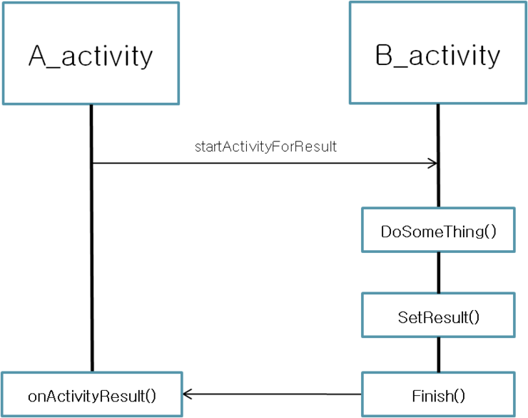

오늘은 startActivityForResult 의 사용법을 알아보자.
Activity를 실행하는 방법으로 StartActivityt(Intent intent)를 사용하지만
실행한 Activity가 종료되어 다시 자신이 화면에 보여질때 startActivityForResult 를 사용해보자.
실행 방법은 간단하다.
startActivityForResult (intent , request_code);
intent는 시작할 Activity를 설정한 것이고, 중요한 것은 request_code
미리 지정한 request_code를 넣어주면
호출한 액티비티가 종료되어 onActivityResult 가 호출될때 호출에 사용한 request_code가 넘어온다.
간단히 그림으로 설명하자면.. 아래와 같다...ㅋㅋㅋ

예제)
A_activity.java
// request_code 정의
static final int REQUEST_CODE = 1234;
// B_activity 호출
Intent intent = new Intent(this, B_activity.class);
startActivityForResult(intent, REQUEST_CODE );
// B_activity 가 종료되고 A_activity에서 처리할 수 있는 콜백
@Override
public void onActivityResult(int requestCode, int resultCode, Intent intent){
super.onActivityResult(requestCode, resultCode, intent);
switch(requestCode){
case REQUEST_CODE: // requestCode가 REQUEST_CODE 인 케이스
if(resultCode == RESULT_OK){ //B_activity에서 넘겨진 resultCode가 OK일때만 실행
// 호출한 액티비티가 종료되고 처리할 내용
}
}
B_activity.java
boolean isSuccess = doSomeThing();
if (isSuccess) {
setResult(RESULT_OK);
} else {
setResult(RESULT_CANCEL);
}
finish();
B_activity가 호출이 된 후 종료되기 직전에
setResult(int resultCode) 나 setResult(int resultCode, Intent intent) 를 호출하여 처리한다.
전자는 RESULT_OK 인지 RESULT_CANCEL인지만 구별해서 처리해주어도 될때 사용하고
후자는 데이터를 넘겨주어야 할때 사용하면 된다.
이후 finish()를 호출하여 B_activity를 종료합니다.
B_activity가 종료되고 A_activity가 resume 이 되기 전
onActivityResult 가 호출이 되는데 이때 파라메터로 넘어오는
requestCode 가 B_activity를 호출할 때 인텐트에 넣어주었던 REQUEST_CODE 이면
B_activity가 종료되면서 발생한 이벤트라는 것을 알 수 있고
resultCode 는 B_activity가 finish() 되기 전 setResult로 저장한 RESULT_OK 나 RESULT_CANCEL
의 값으로
B_activity 에서 수행한 doSomeThing()의 결과값이 성공인지 실패인지를 확인하여 A_activity에서 상황에 맞게 처리를 할 수 있게 됩니다.
백문이 불여일견.. 직접 해봅시다~ㅎ